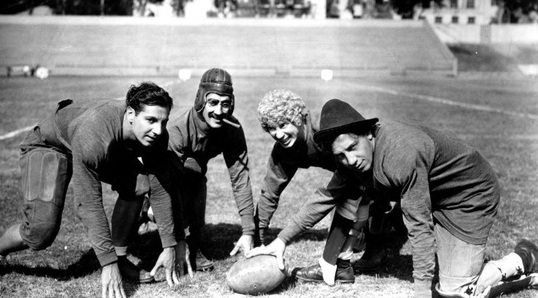

H. Marshall Mcluhan

Why Joel admires him...???
- Because he was a Marx Brothers'
fanatic too!
On the New Years Eve of 1980... Mcluhan died in his sleep of another stroke.
He died after celebrating mass and watching a Marx Brothers' movie Horse Feathers
late into the night with his wife and daughter.
- Or because he was Canadian and Canadians are really lovely people
- His visions of the future of technology was remarkable and
his perspective and approach to thinking is intellectual and well rounded.
Some of his published books were printed with pages backwards (read with a mirror),
some were left blank, juxtaposed images and very interesting examples and articles in his books.
- He made jokes! "Jokes are grievences." He used jokes to heighten people's awareness
and always questioned and curious.
Does Joel know...???
- The title of his book "The Medium is the Massage" was typed wrong.
But when Mcluhan saw the typo, he exclaimed "Leave it alone! It's great, and right on target."
It could now be read as 'Message' 'Mess Age' 'Massage' 'Mass Age'.
- Mcluhan's most frequent statement to and about those who disagree with him:
"You know nothing of my work."
- McLuhan Predicted the Internet in his 1962 Book ‘The Gutenberg Galaxy’, his second book.
- McLuhan Also Divided Media as Hot and Cool to Differentiate Between Media That Required More
or Less Participation from the Audience
- McLuhan Was Religious and Had a Fascination With the Number 3
- McLuhan Starred in a Famous Scene in Woody Allen’s ‘Annie Hall’
- Marshall McLuhan’s brain was fuelled by fresh blood from the heart through not one
but two arteries at the base of his skull, a trait in the mammalian world found mostly in cats
and rarely in human beings.
- Herbert was a name he seldom used. Marshall was his maternal grandmother's surname.
- He would rub his fingers down his palm whenever he says "tactility".
Some quotes...
- "All media exist to invest our lives with artificial perceptions and arbitrary values."
- "I don't necessarily agree with everything I say."
- "Art is anything you can get away with."
- "Diaper backward spells repaid. Think about it."